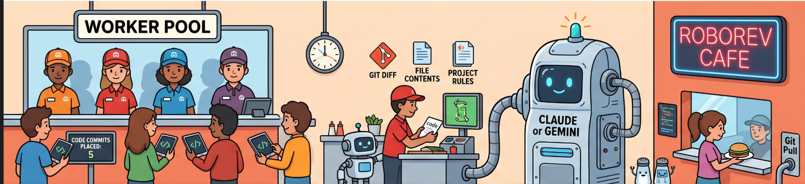
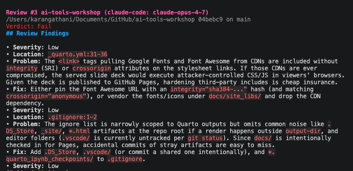
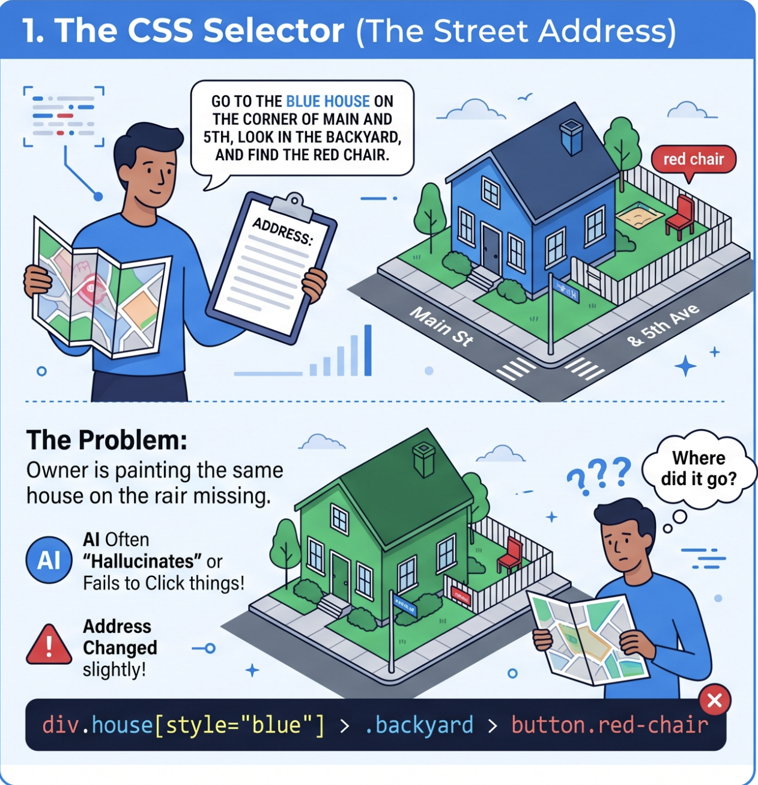
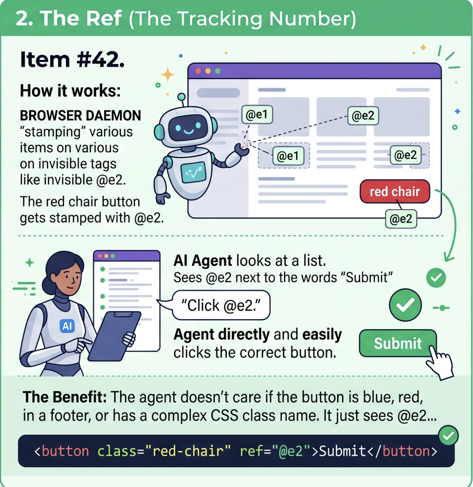

A hands-on workshop for faster, safer agentic development
2026-05-05
Use RoboRev to catch agent-written code issues while the work is still fresh.
Use Agent Browser to navigate, inspect, click, type, and verify through compact refs.
Decide when to review code, when to automate the browser, and when to turn findings into durable tests.
RoboRev keeps agent-generated code reviewable after every commit, without forcing you to stop your flow.
RoboRev is a persistent review queue for agent-written code. It reviews commits in the background and keeps findings open until you address or close them.
By the time you manually inspect code, the agent may already be solving the next problem.
Small issues become expensive when they hide inside a large final diff.
Immediate review gives the agent a chance to fix the exact thing it just changed.

A visual guide showing the RoboRev workflow: agents making changes, commits triggering reviews, findings queuing up, and fixes flowing back—all organized like a café workflow.
RoboRev is not a merge gate by default. Treat it as a review memory that follows your local commits.
roborev init does
Create one small agent-authored change, commit it, and find the RoboRev review.
roborev tuiOpen the interactive review browser.
roborev list –openShow currently open reviews.
roborev show <job_id>Read one review from the CLI.
roborev log <job_id>Inspect the agent job log.
roborev wait –sha HEADWait for an already queued review.
roborev close <job_id>Mark a review as handled.
In the TUI, use arrow keys or j and k to move, a to close, Enter to open details, y to copy a completed review, and ? for shortcuts.
Press y in the TUI, paste the review into your coding agent, and ask for a focused fix.
Run roborev skills install, then use /roborev-review [commit] to request a code review for a commit and /roborev-fix to fix all review findings in Claude Code.
Run roborev fix for open reviews, or roborev refine for an iterative review and fix loop.
roborev tui and choose one finding./roborev-fix, or roborev fix <job_id>.roborev close <job_id> or from the TUI.Ask the agent for one contained change.
Commit when the change reaches a reviewable state.
Scan roborev tui every few commits or every 20 minutes.
Feed findings back into the agent while context is still warm.
review guidelines (.roborev.toml) for recurring project risks.--min-severity when auto-fixing noisy queues.roborev compact when many open findings need consolidation.When you no longer need async reviews, run roborev repo delete [reponame] --cascade to remove the post-commit hook and stop the daemon
# ~/.roborev/config.toml -> Global defaults for all repos
# Default agent when no workflow-specific agent is set.
default_agent = 'claude-code'
default_model = 'claude-sonnet-4-6'
default_backup_agent = ''
default_backup_model = ''
review_reasoning = 'thorough'
refine_reasoning = 'standard'
fix_reasoning = 'standard'
review_agent = 'claude-code'
review_model = 'claude-sonnet-4-6'
RoboRev code review example showing a detailed review with multiple findings, file snippets, and actionable feedback.
Agent Browser gives coding agents a compact, text-first way to operate a real browser.
Agent Browser is a native CLI for browser automation that returns compact accessibility snapshots with deterministic refs such as @e1 and @e2.
A snapshot can describe interactive page state in hundreds of tokens instead of thousands.
The agent clicks @e2, not the second button it guesses from a screenshot.
The agent can reason over text output that names roles, labels, and refs.

CSS selectors require you to inspect, find paths, and hope the selector remains stable. Brittle and token-expensive.

Agent Browser refs are simple, stable handles like @e1 that point to exact elements. Built-in to every snapshot, no guessing.
@e1 style handles.
The CLI talks to a native daemon over Chrome DevTools Protocol. The daemon starts automatically and persists between commands.
Smoke test:
Try without installing: npx agent-browser open posit.co.
Option 1: Install the skill (recommended)
This installs a discovery skill that teaches Claude Code about agent-browser. The skill content auto-updates with your CLI version.
coreCore browser automation: snapshots, forms, screenshots, data extraction, auth.
dogfoodSystematic exploratory testing with bug discovery and UX analysis.
electronAutomate Electron apps: VS Code, Slack, Discord, Figma, etc.
slackNavigate Slack, check unreads, search, send messages, extract data.
vercel-sandboxRun agent-browser inside ephemeral Vercel Sandbox microVMs.
agentcoreRun agent-browser on AWS Bedrock AgentCore cloud browsers.
After installing, use agent-browser skills list to see all available skills, then agent-browser skills get <name> to load one into Claude Code.
Use Agent Browser to add a todo, verify it appears, and close the browser cleanly.
Prompt to your coding agent:
Use Agent Browser to add a todo named “Buy Dr. Pepper” at https://demo.playwright.dev/todomvc/. Show each command before running it. Verify the todo appears with a final snapshot.
“Use agent-browser to open https://positron.posit.co/keyboard-shortcuts.html, take a snapshot, and describe what you see. List the clickable elements by their refs.”
Claude Code runs commands and reads the snapshot output.
“Use agent-browser to navigate to https://posit.co/schedule-a-call, find the email field, type test@posit.co, click submit, and show a screenshot.”
Claude Code chains commands and maps human language to refs.
After installing the skill, Claude Code knows to suggest agent-browser skills get core for detailed workflows.
“I need to systematically test my app. What should I use?”
Claude Code will recommend the dogfood or core skill.
“Something broke on the login page. Use agent-browser to open [url], take a screenshot, and describe what you see.”
Claude Code provides visual + accessibility tree context.
agent-browser open <url>Open a page in a browser session.
agent-browser goto <url>Navigate the current page.
agent-browser snapshot -iPrint compact page state with refs.
agent-browser click @e1Click a referenced element.
agent-browser fill @e1 “text”Clear and fill a field.
agent-browser press EnterSend a keyboard command.
agent-browser screenshot page.pngSave visual evidence.
agent-browser closeClose the browser session.
Test whether the Todo List renders a script-like todo as text or executes it.
Prompt to your coding agent:
Use Agent Browser to test https://demo.playwright.dev/todomvc/ with this todo text: <script>alert('xss')</script>
Open the app, snapshot to find the input, add the todo, save a screenshot as xss-test.png, snapshot again, and report whether the text rendered or executed.
| Approach | How it works | Agent perspective |
|---|---|---|
| Playwright CLI | Find selector input[name="user"], wait for visibility, type text, handle timing |
Requires CSS knowledge, brittle selectors, more “coding” |
| Agent Browser | snapshot -i → see @e1 (username), @e2 (password) → fill @e1 "user" → fill @e2 "pass" → click @e3 |
Natural, human-like, deterministic refs, no CSS needed |
Keep the loop small: change, commit, review, verify, fix.
AI Tools Workshop